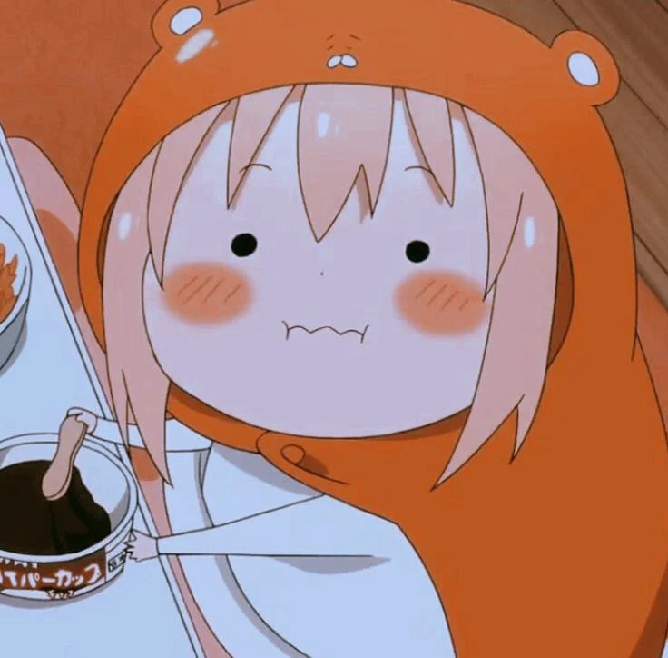

Himouto! Umaru-chan is a Japanese manga series written and illustrated by Sankaku Head.Umaru Doma is a high
school girl who lives with her older brother Taihei. At school, Umaru appears to be the ideal student with
good looks, top grades and many talents. However, she transforms into a kid-sized layabout and spends time
at home feeding her video game and food addiction, much to Taihei's dismay. Throughout the series, Umaru
uses her alternative personality to make friends with others, while at home she throws tantrums about Taihei
not buying her things.